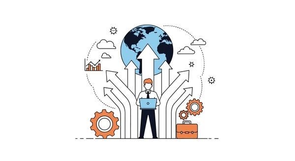
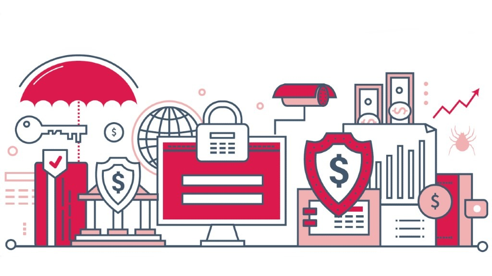

Blog informativo
En la actualidad, las empresas dependen cada vez más de los sistemas de información para desarrollar sus actividades y apoyar la toma de decisiones. La transformación digital ha impulsado el uso constante de tecnologías y datos en todas las áreas organizacionales, permitiendo optimizar procesos, mejorar la eficiencia y fortalecer la competitividad. Sin embargo, este avance también ha incrementado los riesgos asociados al manejo de la información, lo que hace indispensable comprender la importancia de la seguridad empresarial y la protección de datos dentro de la gestión organizacional.
Un sistema de información es un conjunto organizado de recursos que interactúan entre sí para recopilar, procesar, almacenar y distribuir información útil para la empresa. Está conformado por personas, procesos, datos y tecnología que funcionan de manera integrada. Estos sistemas apoyan la planeación, el control y la toma de decisiones, y deben alinearse con los objetivos estratégicos para generar valor y ventaja competitiva (Laudon & Laudon, 2012).
Existen distintos tipos de sistemas de información según su función. Los sistemas operativos apoyan las actividades diarias y rutinarias; los sistemas gerenciales generan informes que facilitan la planificación y el control administrativo; y los sistemas de apoyo a decisiones permiten analizar información compleja para resolver problemas estratégicos. La integración de estos sistemas garantiza un flujo adecuado de información y un mejor desempeño organizacional, favoreciendo el crecimiento y la sostenibilidad en un entorno digitalizado.
La transformación digital implica la incorporación de tecnologías digitales en los procesos empresariales, acompañada de cambios culturales y organizacionales. Según Arnaiz y Pinto (2018), este proceso no solo transforma la forma en que las empresas operan, sino también cómo generan valor. No obstante, también aumenta la exposición a riesgos digitales, lo que exige mayores controles de seguridad.
En este contexto, los datos se han convertido en uno de los activos más importantes para las organizaciones. A través de la ciencia de datos y el análisis de grandes volúmenes de información, es posible automatizar procesos y decisiones, logrando una gestión más rápida y precisa. Sin embargo, como señala Arriagada (2020), la automatización requiere medidas sólidas de protección para evitar el uso indebido o la pérdida de información sensible.
La seguridad empresarial comprende el conjunto de medidas, políticas y controles destinados a proteger los activos físicos y digitales de la organización. Incluye dimensiones tecnológicas, organizacionales y humanas, y busca prevenir accesos no autorizados, fraudes e interrupciones operativas. Por su parte, la protección de datos se enfoca en garantizar la confidencialidad, integridad y disponibilidad de la información sensible, además de cumplir con las normas legales y éticas vigentes.
Los recientes casos de ataques informáticos, como el ransomware, demuestran que la falta de prevención puede generar interrupciones operativas, pérdidas económicas y daños reputacionales. Esto evidencia que la seguridad debe entenderse como una inversión estratégica y no como un gasto adicional.
En conclusión, los sistemas de información son esenciales para el desarrollo empresarial. Aunque la transformación digital ha incrementado el valor de los datos, también ha aumentado los riesgos asociados a su manejo. Por ello, la seguridad empresarial y la protección de datos son fundamentales para garantizar la continuidad del negocio, fortalecer la toma de decisiones y generar confianza en el entorno organizacional.

En el entorno actual, las organizaciones enfrentan un contexto altamente competitivo y digitalizado, donde los sistemas de información (SI) se han convertido en un factor clave para la sostenibilidad y el crecimiento empresarial. La transformación digital no solo implica incorporar herramientas tecnológicas, sino transformar los modelos de negocio, los procesos organizacionales y la forma en que se toman las decisiones.
Este estudio de caso analiza las características de las aplicaciones informáticas dentro de los sistemas de información y su impacto en la transformación digital de empresas con modelos tradicionales. A partir de los aportes de Laudon y Laudon (2012), Arnaiz y Pinto (2018) y Arriagada (2020), se examina cómo los SI apoyan la gestión organizacional y permiten generar valor estratégico.
Según Laudon y Laudon (2012), los sistemas de información son conjuntos de componentes interrelacionados que recopilan, procesan, almacenan y distribuyen información para apoyar la toma de decisiones y el control organizacional. Están conformados por hardware, software, datos, procedimientos y personas, elementos que deben integrarse de forma coherente para generar información confiable y oportuna.
Cuando estos sistemas se alinean con la estrategia empresarial, se convierten en una ventaja competitiva, ya que mejoran el desempeño y facilitan decisiones oportunas.
La transformación digital implica un cambio estructural en la manera en que las empresas crean y entregan valor (Arnaiz & Pinto, 2018). No se trata únicamente de adoptar tecnología, sino de promover una cultura orientada a la innovación y al aprendizaje continuo.
En este proceso, la ciencia de datos y la automatización juegan un papel fundamental. Arriagada (2020) destaca que el análisis de grandes volúmenes de información permite anticipar problemas, reducir la incertidumbre y optimizar decisiones. Sin embargo, la tecnología debe responder a objetivos estratégicos claros para generar resultados reales.
El estudio se centra en analizar cómo las aplicaciones informáticas permiten integrar información, automatizar procesos, generar reportes en tiempo real y fortalecer la toma de decisiones. En empresas tradicionales, uno de los principales desafíos es la resistencia al cambio y la limitada adopción tecnológica.
En este proceso intervienen actores clave como la alta gerencia, encargada de definir la estrategia; el área de tecnología, responsable de implementar los sistemas; y los colaboradores, quienes utilizan las aplicaciones en sus actividades diarias. Su articulación es esencial para el éxito de la transformación digital.
El análisis evidencia que las aplicaciones informáticas cumplen un rol central en la integración de datos, la optimización de procesos y la mejora de la comunicación interna. Cuando los sistemas de información se alinean con la estrategia organizacional, permiten reducir costos, aumentar la eficiencia y fortalecer la competitividad.
No obstante, la implementación tecnológica requiere gestión del cambio, capacitación del personal y compromiso de la alta dirección, ya que la tecnología por sí sola no garantiza resultados.
En conclusión, los sistemas de información son fundamentales para modernizar los modelos de negocio tradicionales y adaptarlos a un entorno digital. Su correcta implementación, alineada con la estrategia empresarial y acompañada de factores humanos y culturales, permite generar valor sostenible y fortalecer la gestión organizacional.
La transformación digital ha cambiado la manera en que las empresas operan, compiten y se relacionan con sus clientes. La incorporación de tecnologías emergentes como la analítica de datos, la automatización, la computación en la nube y los sistemas integrados de información permite optimizar procesos, mejorar la toma de decisiones y generar nuevas oportunidades de negocio. Sin embargo, este entorno digital también incrementa la exposición a riesgos cibernéticos, lo que obliga a las organizaciones a fortalecer sus estrategias empresariales junto con políticas sólidas de seguridad y privacidad de la información.
Las empresas que adoptan tecnologías emergentes suelen aplicar estrategias enfocadas en la eficiencia, la innovación y la competitividad. Entre las más relevantes se encuentran la digitalización de procesos administrativos y productivos, la integración de sistemas de información para centralizar datos, el uso de inteligencia de negocios para apoyar decisiones estratégicas y la automatización de tareas repetitivas para reducir errores humanos.
Según Laudon y Laudon (2012), los sistemas de información aportan valor cuando se diseñan y gestionan de acuerdo con la estructura y los objetivos organizacionales. Esto significa que la tecnología debe responder a necesidades reales y contribuir al cumplimiento de metas estratégicas. Por su parte, Arnaiz y Pinto (2018) explican que la transformación digital no se limita a implementar herramientas tecnológicas, sino que implica una reconfiguración del modelo de negocio, la cultura organizacional y la forma en que se crea valor.
En este contexto, la estrategia empresarial debe integrar innovación tecnológica con gestión del riesgo, asegurando que el crecimiento digital no comprometa la estabilidad de la organización.
A medida que las empresas amplían su infraestructura digital, también aumentan sus vulnerabilidades. Entre las principales amenazas se encuentran los ataques de phishing, el ransomware, el robo de credenciales, el acceso no autorizado a bases de datos y las fallas en la configuración de servicios en la nube.
Uno de los factores más críticos es el error humano. El uso de contraseñas débiles, la falta de actualización de sistemas o la descarga de archivos maliciosos pueden abrir la puerta a incidentes graves. Gauthier, Méndez y Suárez (2020) sostienen que los ciberataques son inevitables debido a la interconectividad global y a la constante evolución de las amenazas digitales. Por ello, el enfoque empresarial no debe centrarse únicamente en prevenir, sino en gestionar adecuadamente los riesgos.
Además, la falta de políticas claras de protección de datos puede generar impactos legales y reputacionales, afectando la confianza de clientes y aliados estratégicos.
Para mitigar o reducir estas vulnerabilidades, las empresas deben adoptar un enfoque integral de seguridad. Esto incluye la implementación de políticas formales de seguridad de la información, la definición de protocolos de actuación ante incidentes y la asignación de responsabilidades claras dentro de la organización.
Entre las acciones preventivas más relevantes se encuentran la autenticación multifactor, la encriptación de datos sensibles, la realización de copias de seguridad periódicas y el monitoreo continuo de redes y sistemas. También es fundamental desarrollar programas de capacitación que promuevan la cultura digital y sensibilicen a los empleados sobre buenas prácticas de seguridad.
Cano y Saucedo (2022) destacan que la ciberseguridad debe formar parte del ADN de la transformación digital, integrándose a la planeación estratégica y al proceso de toma de decisiones. De esta manera, la seguridad deja de ser reactiva y se convierte en un elemento preventivo y estratégico.
En el ecosistema digital actual existen diferentes perfiles de hackers. Los hackers negativos buscan explotar vulnerabilidades con fines ilícitos, como el robo de información, la extorsión o el sabotaje digital. Sus acciones pueden generar pérdidas económicas significativas y afectar la reputación corporativa.
En contraste, los hackers éticos o positivos trabajan de manera autorizada para identificar debilidades en los sistemas de seguridad antes de que sean aprovechadas por actores malintencionados. Las pruebas de penetración y auditorías de seguridad se han convertido en prácticas comunes en empresas que desean fortalecer su infraestructura tecnológica.
Este fenómeno demuestra que la seguridad digital no se basa únicamente en la defensa pasiva, sino en la anticipación y evaluación constante de riesgos.
La ciber resiliencia se refiere a la capacidad de una organización para resistir, adaptarse y recuperarse ante incidentes cibernéticos sin comprometer su continuidad operativa. Implica no solo prevenir ataques, sino también contar con planes de contingencia que permitan restablecer operaciones rápidamente.
El papel de la alta dirección es fundamental en este proceso. Cuando la gerencia asume la seguridad como una prioridad estratégica, se facilita la asignación de recursos, la implementación de controles adecuados y la consolidación de una cultura organizacional orientada a la protección de la información.
Desarrollar ciber resiliencia permite a las empresas mantener la confianza de sus clientes, cumplir con normativas de protección de datos y sostener su competitividad en un entorno digital cada vez más complejo.

Las tecnologías emergentes representan una oportunidad clave para el crecimiento empresarial, pero también implican nuevos desafíos en materia de seguridad y privacidad. Por ello, las estrategias digitales deben complementarse con políticas claras, acciones preventivas y una visión estratégica liderada desde la alta dirección.
En un mundo donde los riesgos cibernéticos son permanentes, la ciberseguridad y la resiliencia digital se convierten en pilares esenciales para garantizar la sostenibilidad, la innovación y la generación de valor en las organizaciones.
Arnaiz, A., & Pinto, J. (2018). Transformación digital y creación de valor empresarial.
Arriagada, M. (2020). Ciencia de datos y automatización en la gestión organizacional.
Laudon, K., & Laudon, J. (2012). Sistemas de información gerencial. Pearson.
Cano, J., & Saucedo, L. (2022). Ciberseguridad estratégica y resiliencia organizacional.
Gauthier, L., Méndez, P., & Suárez, R. (2020). Gestión de riesgos y amenazas digitales en entornos empresariales.